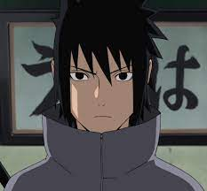

Sasuke uchiha
Sasuke Uchiha (うちはサスケ, Uchiha Sasuke) é um dos últimos membros sobreviventes do clã Uchiha de Konohagakure, além de ser a reencarnação atual de Indra. Ele se tornou um shinobi para que pudesse algum dia ficar forte o suficiente para se vingar contra o seu irmão mais velho, Itachi, que tinha massacrado todo o seu clã. Inicialmente, um membro do Time Kakashi de Konoha, Sasuke desertou da aldeia para obter poder com Orochimaru, e mais tarde também se juntou a Akatsuki, tornando-se um criminoso internacional no processo. Mais tarde, ele se torna uma peça fundamental para acabar com a Quarta Guerra Mundial Ninja, até ser finalmente redimido por seu rival, e também melhor amigo, Naruto Uzumaki. Sasuke decide voltar para Konoha, dedicando a sua vida para ajudar a proteger a vila e seus habitantes.
Light Yagami
Isso mesmo, eu sou Kira! [...] Vejam bem... eu não sou só Kira, eu também sou um Deus, sou o Deus do Novo Mundo! Kira se tornou a lei do mundo em que vivemos agora, é ele que mantém a ordem, eu me tornei a justiça, a única esperança da humanidade. [...] Desde o aparecimento do Kira a seis anos as guerras pararam e a taxa de crime mundial reduziu mais de 70%. Mas ainda não é o suficiente, o mundo ainda é podre... com muitas pessoas podres nele. Alguém tem que fazer isso! Quando eu recebi esse caderno a seis anos atrás eu sabia que tinha que fazer isso, não... eu era o único que poderia fazer isso, eu sabia que matar pessoas era crime, mas não havia outras maneira! O mundo tinha que ser consertado, esse foi o propósito que me deram! Só eu poderia fazer isso. Quem mais poderia fazer isso? Quem mais chegaria atê esse ponto?! Quem continuaria? — Light Yagami.
.png)